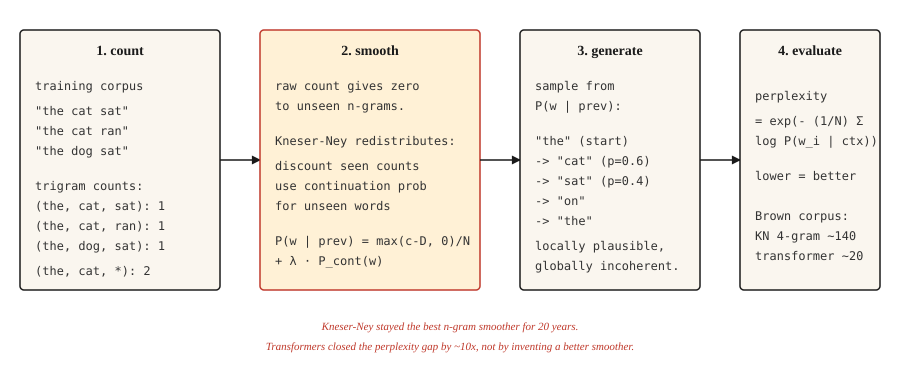

Home / NLP, Foundations to Advanced
Text Generation Before Transformers — N-gram Language Models
If a word is surprising, the model is bad. Perplexity makes surprise a number. Smoothing keeps it finite.
- Type
- Build
- Languages
- Python
- Prerequisites
- Phase 5 · 01 (Text Processing), Phase 2 · 14 (Naive Bayes)
- Time
- ~45 minutes
#The Problem
Before transformers, before RNNs, before word embeddings, a language model predicted the next word by counting how often it followed the previous n-1 words. Count "the cat" → "sat" 47 times, "the cat" → "jumped" 12 times, "the cat" → "refrigerator" 0 times. Normalize to get a probability distribution.
That is an n-gram language model. It ran every speech recognizer, every spell checker, and every phrase-based machine translation system from 1980 through 2015. It still runs when you need cheap on-device language modeling.
The interesting problem is what to do about unseen n-grams. A raw count-based model assigns zero probability to anything it has not seen, which is catastrophic because sentences are long and almost every long sentence contains at least one unseen sequence. Fifty years of smoothing research fixed that. Kneser-Ney smoothing is the result, and modern deep learning inherited its empirical tradition.
#The Concept

#The prediction game
Before any of this machinery existed, one experiment defined what a language model is. Cover the next letter of an English sentence. Ask someone to guess it, one guess at a time, until they get it right. Write down the guess count. Repeat for a few hundred letters.
The guess counts are not trivia. They are a lossless re-encoding of the text: hand the count sequence to a second, identical guesser and they can reconstruct every letter, because at each position they know exactly which guesses come first. A message you can re-encode in fewer symbols carries less information per symbol, so the guess-count statistics put a ceiling on the entropy of English.
Shannon ran this in 1951 and got a number that still governs the field. A 27-symbol alphabet (26 letters plus space) could carry log2(27) ≈ 4.75 bits per letter. Human guessers with 100 letters of context landed between 0.6 and 1.3 bits per letter. English is roughly three-quarters forced moves. The structure a model must learn was measured before any model could learn it.
Every language model since is a mechanical player of this game, and every evaluation number in this lesson is the game scored:
- Cross-entropy loss is the average number of bits the model needs per symbol. Training an LM is literally minimizing its score at the guessing game.
- Perplexity is
2^bits(ore^nats): the branching factor still facing the model after its guesswork. Uniform guessing over 27 symbols is perplexity 27; a 1-bit-per-letter player has perplexity 2. - Context length is the player's memory. A trigram model plays with two tokens of memory. A transformer plays the same game with 100K tokens. The rules never changed; the player got better.
One unit switch to track: the game scores per letter in bits (log2), while the n-gram formulas below score per word token in nats (natural log) — and since perplexity e^H in nats equals 2^H in bits, the two views are the same measurement in different units.
N-gram probability: P(w_i | w_{i-n+1}, ..., w_{i-1}). Fix n (typically 3 for trigrams, 4 for 4-grams). Compute from counts:
P(w | context) = count(context, w) / count(context)The zero-count problem. Any n-gram not seen in training gets probability zero. A 2007 study on the Brown corpus found that even a 4-gram model had 30% of held-out 4-grams unseen in training. You cannot evaluate on any real text without smoothing.
Smoothing approaches, in order of sophistication:
- Laplace (add-one). Add 1 to every count. Simple, terrible on rare events.
- Good-Turing. Reallocate probability mass from higher-frequency events to unseen ones based on frequency-of-frequencies.
- Interpolation. Combine n-gram, (n-1)-gram, etc., estimates with tunable weights.
- Backoff. If n-gram has count zero, fall back to (n-1)-gram. Katz backoff normalizes this.
- Absolute discounting. Subtract a fixed discount
Dfrom all counts, redistribute to unseen. - Kneser-Ney. Absolute discounting plus a clever choice for the lower-order model: use continuation probability (how many contexts a word appears in) instead of raw frequency.
The Kneser-Ney insight is deep. "San Francisco" is a common bigram. Unigram "Francisco" appears mostly after "San." Naive absolute discounting gives "Francisco" high unigram probability (because the count is high). Kneser-Ney notices that "Francisco" appears in only one context and lowers its continuation probability accordingly. Result: a novel bigram ending in "Francisco" gets the appropriate low probability.
Evaluation: perplexity. The exponent of the average negative log-likelihood per word on a held-out test set. Lower is better. A perplexity of 100 means the model is as confused as it would be choosing uniformly among 100 words.
perplexity = exp(- (1/N) * Σ log P(w_i | context_i))#Build It
#Step 1: trigram counts
from collections import Counter, defaultdict
def train_ngram(corpus_tokens, n=3):
ngrams = Counter()
contexts = Counter()
for sentence in corpus_tokens:
padded = ["<s>"] * (n - 1) + sentence + ["</s>"]
for i in range(len(padded) - n + 1):
ctx = tuple(padded[i:i + n - 1])
word = padded[i + n - 1]
ngrams[ctx + (word,)] += 1
contexts[ctx] += 1
return ngrams, contexts
def raw_probability(ngrams, contexts, context, word):
ctx = tuple(context)
if contexts.get(ctx, 0) == 0:
return 0.0
return ngrams.get(ctx + (word,), 0) / contexts[ctx]Input is a list of tokenized sentences. Output is n-gram counts and context counts. <s> and </s> are sentence boundaries.
#Step 2: Laplace smoothing
def laplace_probability(ngrams, contexts, vocab_size, context, word):
ctx = tuple(context)
numerator = ngrams.get(ctx + (word,), 0) + 1
denominator = contexts.get(ctx, 0) + vocab_size
return numerator / denominatorAdd 1 to every count. Smooths but over-allocates mass to unseen events, hurting rare-known events too.
#Step 3: Kneser-Ney (bigram, interpolated)
def kneser_ney_bigram_model(corpus_tokens, discount=0.75):
unigrams = Counter()
bigrams = Counter()
unigram_contexts = defaultdict(set)
for sentence in corpus_tokens:
padded = ["<s>"] + sentence + ["</s>"]
for i, w in enumerate(padded):
unigrams[w] += 1
if i > 0:
prev = padded[i - 1]
bigrams[(prev, w)] += 1
unigram_contexts[w].add(prev)
total_unique_bigrams = sum(len(ctx_set) for ctx_set in unigram_contexts.values())
continuation_prob = {
w: len(ctx_set) / total_unique_bigrams for w, ctx_set in unigram_contexts.items()
}
context_totals = Counter()
for (prev, w), count in bigrams.items():
context_totals[prev] += count
unique_follow = defaultdict(set)
for (prev, w) in bigrams:
unique_follow[prev].add(w)
def prob(prev, w):
count = bigrams.get((prev, w), 0)
denom = context_totals.get(prev, 0)
if denom == 0:
return continuation_prob.get(w, 1e-9)
first_term = max(count - discount, 0) / denom
lambda_prev = discount * len(unique_follow[prev]) / denom
return first_term + lambda_prev * continuation_prob.get(w, 1e-9)
return probThree moving parts. continuation_prob captures "how many different contexts does this word appear in?" (the Kneser-Ney innovation). lambda_prev is the mass freed by the discount, used to weight the backoff. The final probability is the discounted main term plus the weighted continuation term.
#Step 4: generating text with sampling
import random
def generate(prob_fn, vocab, prefix, max_len=30, seed=0):
rng = random.Random(seed)
tokens = list(prefix)
for _ in range(max_len):
candidates = [(w, prob_fn(tokens[-1], w)) for w in vocab]
total = sum(p for _, p in candidates)
r = rng.random() * total
acc = 0.0
for w, p in candidates:
acc += p
if r <= acc:
tokens.append(w)
break
if tokens[-1] == "</s>":
break
return tokensSampling proportional to probability. Always gives different output per seed. For beam-search-like output, pick the argmax at each step (greedy) and add a small randomness knob (temperature).
#Step 5: perplexity
import math
def perplexity(prob_fn, sentences):
total_log_prob = 0.0
total_tokens = 0
for sentence in sentences:
padded = ["<s>"] + sentence + ["</s>"]
for i in range(1, len(padded)):
p = prob_fn(padded[i - 1], padded[i])
total_log_prob += math.log(max(p, 1e-12))
total_tokens += 1
return math.exp(-total_log_prob / total_tokens)Lower is better. For Brown corpus, a well-tuned 4-gram KN model hits perplexity around 140. A transformer LM hits 15-30 on the same test set. The gap is about 10x. That gap is why the field moved on.
#Use It
- Classical NLP teaching. The clearest exposure to smoothing, MLE, and perplexity you can get.
- KenLM. Production n-gram library. Used as a rescorer in speech and MT systems where low latency matters.
- On-device autocomplete. Trigram models in keyboards. Still.
- Baselines. Always compute an n-gram LM perplexity before declaring your neural LM good. If your transformer does not beat KN by a wide margin, something is wrong.
#Ship It
Save as outputs/prompt-lm-baseline.md:
---
name: lm-baseline
description: Build a reproducible n-gram language model baseline before training a neural LM.
phase: 5
lesson: 16
---
Given a corpus and target use (next-word prediction, rescoring, perplexity baseline), output:
1. N-gram order. Trigram for general English, 4-gram if corpus is large, 5-gram for speech rescoring.
2. Smoothing. Modified Kneser-Ney is the default; Laplace only for teaching.
3. Library. `kenlm` for production, `nltk.lm` for teaching, roll your own only to learn.
4. Evaluation. Held-out perplexity with consistent tokenization between train and test sets.
Refuse to report perplexity computed with different tokenization between systems being compared — perplexity numbers are comparable only under identical tokenization. Flag OOV rate in test set; KN handles OOV poorly unless you reserve a special <UNK> token during training.#Exercises
- Easy. Train a trigram LM on a 1,000-sentence Shakespeare corpus. Generate 20 sentences. They will be locally plausible but globally incoherent. This is the canonical demo.
- Medium. Implement perplexity for your KN model on a held-out Shakespeare split. Compare against Laplace. You should see KN lower perplexity by 30-50%.
- Hard. Build a trigram spell corrector: given a misspelled word and its context, generate corrections and rank by context probability under the LM. Evaluate on the Birkbeck spelling corpus (public).
#Key Terms
| Term | What people say | What it actually means |
|---|---|---|
| N-gram | Word sequence | Sequence of n consecutive tokens. |
| Smoothing | Avoiding zeros | Reallocating probability mass so unseen events get non-zero probability. |
| Perplexity | LM quality metric | exp(-average log-prob) on held-out data. Lower is better. |
| Backoff | Fallback to shorter context | If trigram count is zero, use bigram. Katz backoff formalizes this. |
| Kneser-Ney | Best smoothing for n-grams | Absolute discounting + continuation probability for the lower-order model. |
| Continuation probability | KN-specific | P(w) weighted by number of contexts w appears in, not by raw count. |
| Entropy of text | Information per symbol | Average bits needed to encode the next symbol given the context. Shannon's 1951 estimate for printed English with up to 100 letters of context: 0.6-1.3 bits/letter, measured before any model existed. |
#Further Reading
- Shannon (1951). Prediction and Entropy of Printed English — the guessing-game experiment that defined the target every language model still optimizes.
- Jurafsky and Martin — Speech and Language Processing, Chapter 3 (2026 draft) — the canonical treatment of n-gram LMs and smoothing.
- Chen and Goodman (1998). An Empirical Study of Smoothing Techniques for Language Modeling — the paper that settled Kneser-Ney as the best n-gram smoother.
- Kneser and Ney (1995). Improved Backing-off for M-gram Language Modeling — the original KN paper.
- KenLM — fast production n-gram LM, still used in 2026 for latency-sensitive applications.
Nice. That's 6 minutes of NLP, Foundations to Advanced behind you.
Continue to Chatbots — Rule-Based to Neural to LLM Agents →